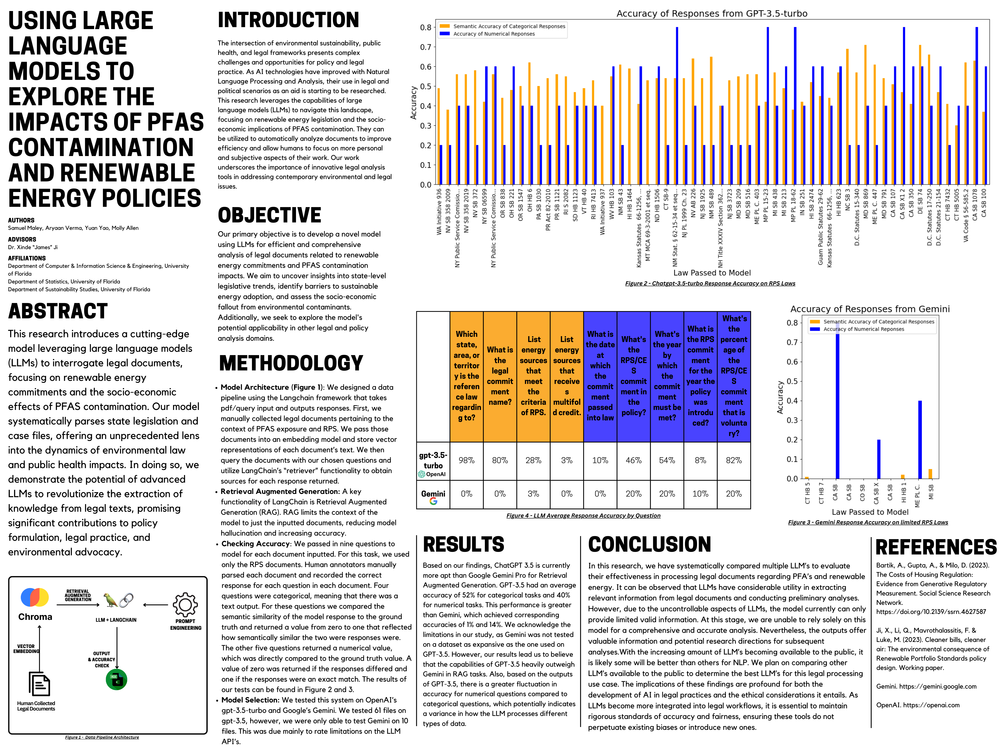
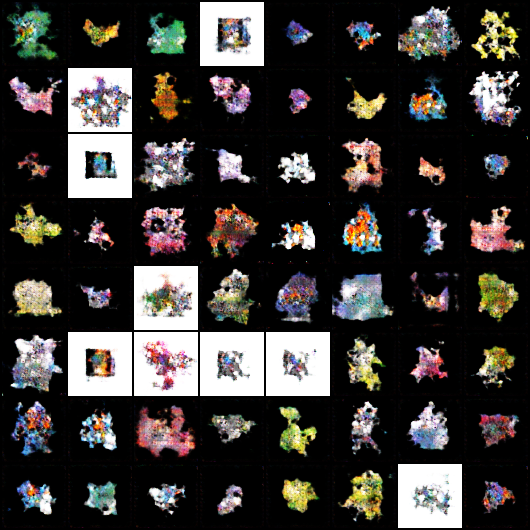

Samuel Maley
Computer Science major at the University of Florida with research and development experience in data science. Currently looking for entry-level and internship opportunities in Data Science, ML/AI, and Software Engineering. Feel free to reach out!
Experience
Data Science Research Intern
Research intern for the Geospatial, Image, and Data Sciences Division of CINO at the Applied Research Laboratory at Pennsylvania State University. Utilized pytorch to create data augmentation pipeline for a satellite imagery object detection model.
Research Intern
Under Dr. Xinde Ji, researched the use of LLMs in analyzing large pdf documents. Developed a framework using LangChain that utilizes GPT models and Retrieval Augmented Generation to analyze and query large legal documents. Implemented modular backend to handle the usage of different LLMs and check the accuracy of its performance.
Research Poster

Research Assistant
Under Dr. Daisy Wang and the Data Science Research Group, contributed to the Environment-driven Conceptual Learning (ECOLE) project for DARPA, and optimized testing interface for human feedback driven multimodal AI model by adding knowledge graph input. Used the University of Florida’s supercomputer to implement a human-feedback driven image question-answer model using Meta AI’s LLaMA2. Used FFMPEG to generate image and video test cases from the STAR dataset.
Undergraduate Research Assistant
Under Dr. Boyi Hu, conducted comprehensive analysis of human-robot interactions to identify potential risks and design safeguards, collaborating closely with cross-functional teams to research emerging technologies. Assisted in the design and use of EMG and IMU sensors to collect human participant data over 60+ hours of experiments and utilized pandas and numpy to prepare collected EMG and movement data for statistical inference. Assisted in the design of a VR human-robot interaction data pipeline through the use of ROSBridge, Unity, and Nvidia Omniverse.
Programming Tutor & Marketing Assistant
355Code teaches beginner programming concepts to students grades 4-12. In this position, I managed tutors and ensured that quality instruction is given to students. I learned to match the needs of each student with the appropriate teacher. Additionally, I helped manage communications between parents and ensured payments were fulfilled. I also assisted with marketing and collaborated with my manager to engineer effective advertisement strategies.
Education
University of Florida
Projects
PokéGAN
PokéGAN uses Generative Adversarial Networks (GANs) to create new, fake Pokémon images. This project attempts to address the limitations of previous attempts by leveraging a unique and extensive dataset to generate higher quality and more diverse Pokémon images.
GitHub Repository

Machine Learning on Tic-Tac-Toe Dataset
This repository contains the code for a machine learning project focused on building and evaluating various models on a tic-tac-toe dataset. The project involves implementing classifiers and regressors using libraries such as pandas, numpy, and scikit-learn, and demonstrates how these models can be used to predict optimal moves in a tic-tac-toe game.
GitHub RepositoryYouTube Video Summarizer
This project utilizes OpenAI's ChatGPT API and a Youtube transcript API to generate summaries of an inputted YouTube video.
GitHub RepositorySkills
- Languages: Python, C++, SQL, Java, JavaScript, HTML/CSS, ECL
- Developer Tools: Git, Linux, Jupyter
- Libraries/Technologies: scikit-learn, TensorFlow, PyTorch, pandas, NumPy, Matplotlib, OpenAI, LangChain, CUDA